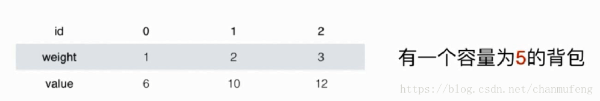
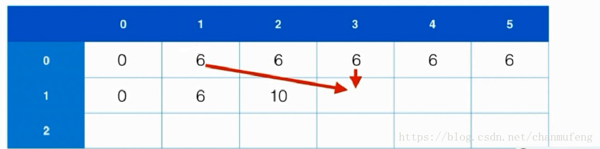
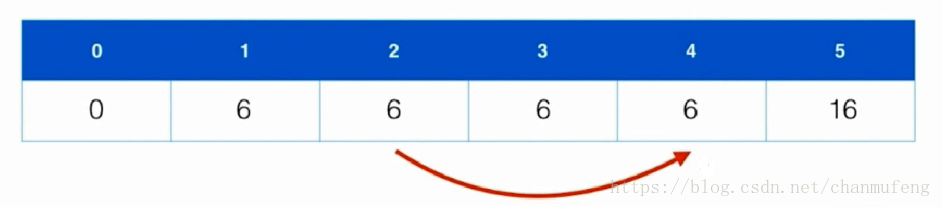

本文转载自：彻底理解0-1背包问题
0-1背包问题
给定n个重量为w1,w2,w3,…,wn,价值为v1,v2,v3,…,vn,的物品和容量为C的背包，求这个物品中一个最有价值的子集，使得在满足背包的容量的前提下，包内的总价值最大。
0-1背包问题指的是每个物品只能使用一次
递归方法
首先我们用递归的方式来尝试解决这个问题。
我们用F(n,C) 表示将前n个物品放进容量为C的背包里，得到的最大的价值。
我们用自顶向下的角度来看，假如我们已经进行到了最后一步（即求解将n个物品放到背包里获得的最大价值），此时我们便有两种选择:
- 不放第n个物品，此时总价值为
F(n−1,C) - 放置第n个物品，此时总价值为
vn+F(n−1,C−wn)
两种选择中总价值最大的方案就是我们的最终方案，递推式（有时也称之为状态转移方程）如下:
F(i,C)=max(F(i−1,C),v(i)+F(i−1,C−w(i))) (前提是 w[i] <= C)
代码如下：
1 | public class KnapSack01 { |
记忆化搜索
我们用递归方法可以很简单的实现以上代码，但是有个严重的问题就是，直接采用自顶向下的递归算法会导致要不止一次的解决公共子问题，因此效率是相当低下的。
我们可以将已经求得的子问题的结果保存下来，这样对子问题只会求解一次，这便是记忆化搜索。
下面在上述代码的基础上加上记忆化搜索
1 | public class KnapSack01 { |
动态规划算法


1 | public class KnapSack01 { |
空间复杂度的极致优化
上面的动态规划算法使用了O(n*C)的空间复杂度（因为我们使用了二维数组来记录子问题的解），其实我们完全可以只使用一维数组来存放结果，但同时我们需要注意的是，为了防止计算结果被覆盖，我们必须从后向前分别进行计算。

我们仍然假设背包空间为5，根据
F(i,C)=max(F(i−1,C),v(i)+F(i−1,C−w(i)))
我们可以知道，当我们利用一维数组进行记忆化的时候，我们只需要使用到当前位置的值和该位置之前的值，举个例子
假设我们要计算F(i,4),我们需要用到的值为F(i−1,4) ,和F(i−1,4−w(i)),因此为了防止结果被覆盖，我们需要从后向前依次计算结果
最终的动态规划代码如下:
1 | public class KnapSack01 { |
利用背包问题的思想解决问题
leetcode 416 Partition Equal Subset Sum
给定一个仅包含正整数的非空数组，确定该数组是否可以分成两部分，要求两部分的和相等
问题分析
该问题我们可以利用背包问题的思想进行求解。
假设给定元素个数为n的数组arr，数组元素的和为sum，对应于背包问题，等价于有n个物品，每个物品的重量和价值均为为arr[i]，背包的限重为sum/2，求解背包中的物品最大价值为多少？
1 | class Solution { |